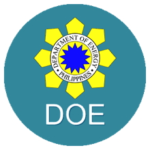
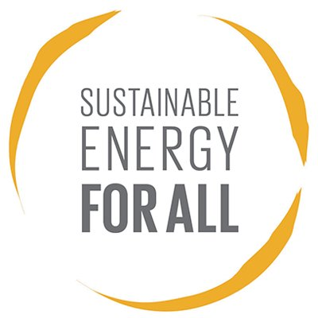
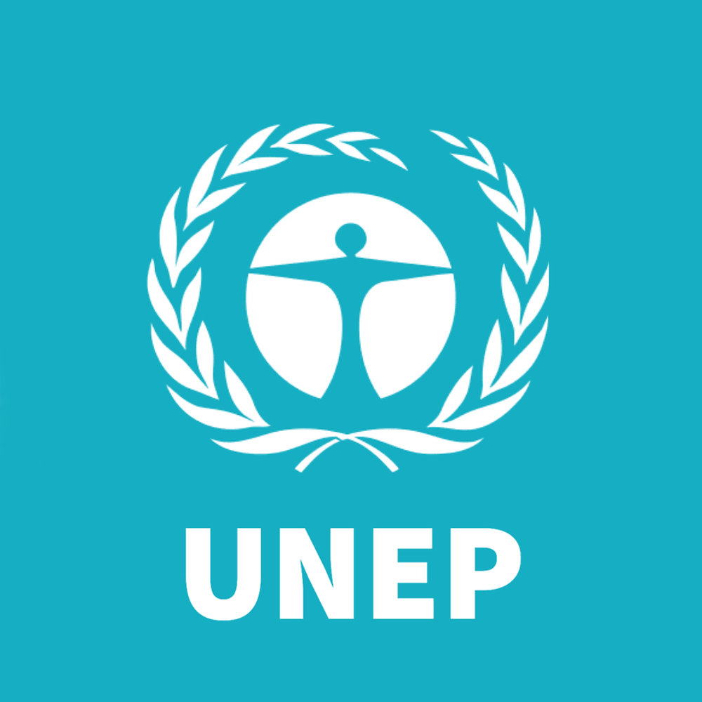
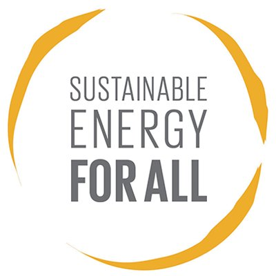
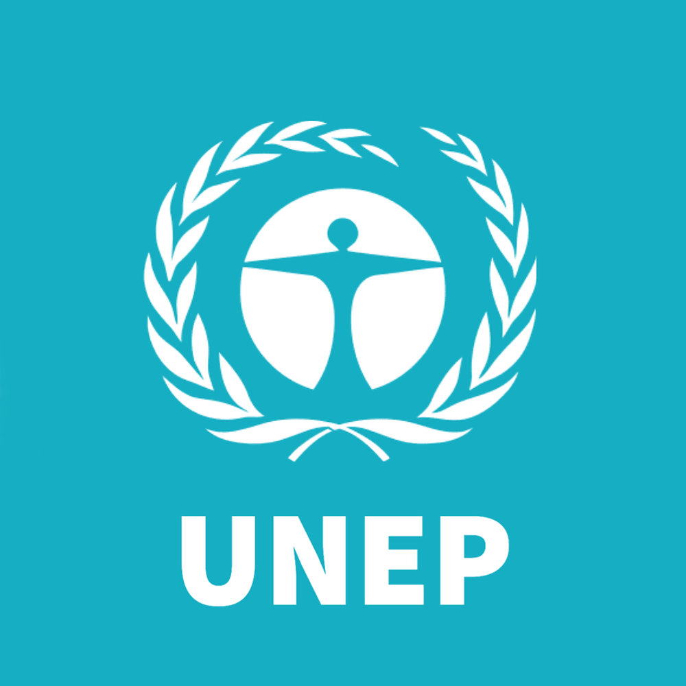
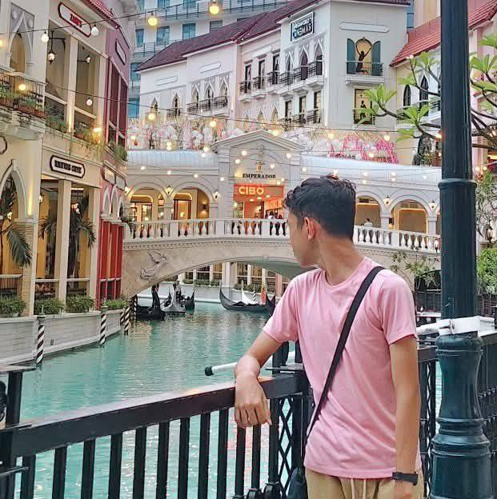

Recommended Resources
 




About the Author
I am Justin Diez, a student of Grade 9 - Lithium. I myself am an environment and governance enthusiast, which is why I chose this advocacy, which focuses on providing a basic necessity for everyone in the twenty-first century. I'm also interested in the cost efficiency of alternative sources of energy.
You can contact me through my Facebook account.
Pictures and figures taken from:
- https://upload.wikimedia.org/wikipedia/commons/thumb/a/aa/Sustainable_Development_Goal_07CleanEnergy.svg/1200px-Sustainable_Development_Goal_07CleanEnergy.svg.png
- https://static.wixstatic.com/media/45115e_64149310bf9b4b54a0faa95a35bda58a~mv2.jpeg
- https://upload.wikimedia.org/wikipedia/commons/d/d3/SEforALL_organization_logo.jpg
- https://asti.dost.gov.ph/wp-content/uploads/2018/07/doe.png